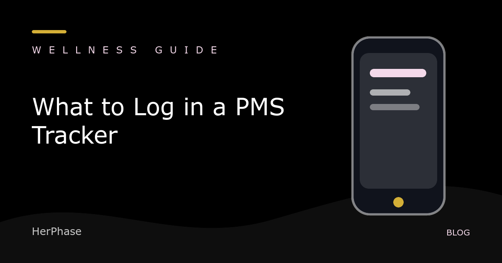

PMS tracker checklist
What to Log in a PMS Tracker
By HerPhase · Updated

A consistent, small daily record is more useful than a detailed entry you only complete once. Choose categories that help you notice timing and prepare questions for a clinician.
Start with the basics
- Period start and end dates
- Flow level and spotting
- Pain or cramps, with a simple severity scale
- Mood and irritability
- Energy and fatigue
- Sleep quality and duration
- Headache, bloating, appetite, or other symptoms relevant to you
Add context without assigning blame
Stress, travel, illness, training load, medication changes, and sleep may provide useful context. A pattern does not prove a cause. Keep the observation separate from the explanation.
Use the same scale
A three- or five-point scale is usually enough. Define what “mild,” “moderate,” and “severe” mean for you, then reuse that definition. Record “not logged” separately from “none.”
Review across several cycles
Look for timing: which symptoms appear, when they start, and when they resolve. Bring the dates to a qualified clinician if symptoms disrupt work, school, sleep, relationships, or safety.
HerPhase can store daily check-ins locally for general planning context. It is not medical advice, diagnosis, contraception, or a fertility tool.